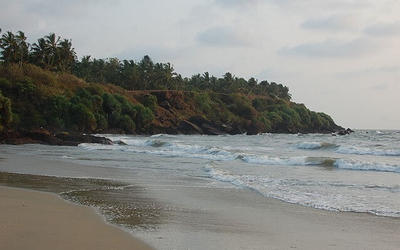
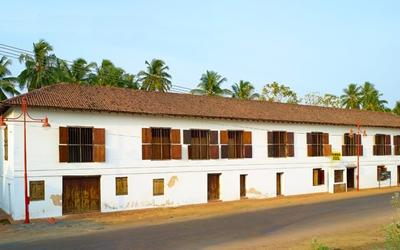
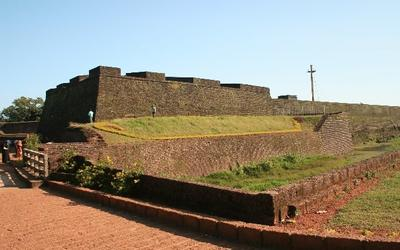
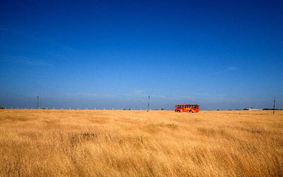

Kannur

The city Kannur is considered as the crown of the paradise called Kerala. As soon as you enter the city on the Malabar coast, you are greeted with the refreshing and breathtaking scent and sight of nature, historic forts, ageless folk arts, and more. This is the place where you can enjoy a quiet time amidst nature and get a chance to learn the rich history at forts, old shrines, and museums. You can also get a taste of its world-famous spices and lots more. While there’s so much to explore, naturally there’ll be numerous places to visit in Kannur. Each place in Kannur reflects the essence of the city that will leave you simply mesmerised.
Top Places To Visit In Kannur
Arakkal Museum

Arakkal Museum is dedicated to the only Muslim royal family of Kerala, Arakkal Ali Rajas. The museum is located inside the Durbar Hall of the palace where the royal family lived and conducted gatherings with kings and nobles. Get an insight into their culture and lives through furniture, art, weapons and more displayed in the museum. Even if you are not a history buff, this place is a must visit in Kannur because of the palace. It has a majestic grandeur and elegance that immediately takes you in the past. The palace never fails to cause wide-mouthed wonder to its visitors.
Location: Ayikkara Government Hospital Road, Ayikkara, near District Hospital, Kannur, Kerala 670013
Timings: 10 AM – 5 PM, Monday closed
St. Angelo Fort

Situated on the coast of the mesmerising Arabian Sea, St. Angelo Fort is more than just a remarkable structure. A world heritage site, it is brimming with stories about battles to conquer it by the Portuguese and Dutch. When you are at the fort, you can enjoy a breath-taking view of the sea, natural harbour Mopilla Bay and Dharmadam Island. Inside the fort, there are beautiful, well-maintained gardens. The aura of the whole location is very relaxing. Visiting this fort is one of the best things to do in Kannur.
Location: Near Cannannore Cantonment, Burnacherry, Kannur, Kerala 670017
Timings: 8 AM – 6 PM
Madayipara

A variety of flowers blooming on a large green canvas. What a sight it would be. Find out by visiting the land of flowers, Madayipara! This place is famous for being one of the most picturesque places in the entire Kerala. And one can see why. Located on a hillock near Pazhayangadi, the bed of flowers grabs the attention of even the most impatient souls and makes it lose itself in the wild yet manicured beauty. And what’s more charming is that the blossoming landscape looks different every season.
Location: Kannur, Kerala